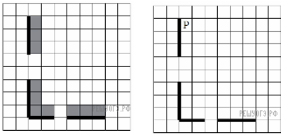
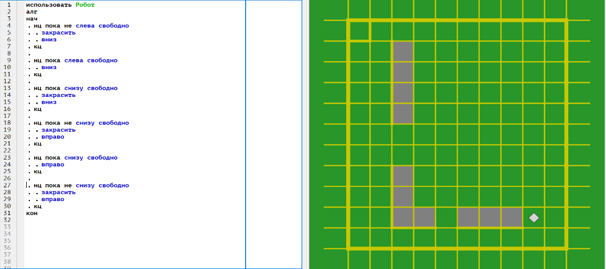

Задание 15. Создавать и выполнять программы для заданного исполнителя (вариант задания 15.1) или на универсальном языке программирования (вариант задания 15.2)
Пример решения задания 15.1
Исполнитель Робот умеет перемещаться по лабиринту, начерченному на плоскости, разбитой на клетки. Между соседними (по сторонам) клетками может стоять стена, через которую Робот пройти не может. У Робота есть девять команд. Четыре команды — это команды-приказы:вверх
вниз
влево
вправо
При выполнении любой из этих команд Робот перемещается на одну клетку соответственно: вверх ↑ вниз ↓, влево ← , вправо →. Если Робот получит команду передвижения сквозь стену, то он разрушится. Также у Робота есть команда закрасить, при которой закрашивается клетка, в которой Робот находится в настоящий момент.
Ещё четыре команды — это команды проверки условий. Эти команды проверяют, свободен ли путь для Робота в каждом из четырёх возможных направлений:
сверху свободно
снизу свободно
слева свободно
справа свободно
Эти команды можно использовать вместе с условием «если», имеющим следующий вид:
если /условие/ то
/последовательность команд/ всеЗдесь условие — одна из команд проверки условия. Последовательность команд — это одна или несколько любых команд-приказов. Например, для передвижения на одну клетку вправо, если справа нет стенки, и закрашивания клетки можно использовать такой алгоритм:
если справа свободно то
вправо
закрасить
все
В одном условии можно использовать несколько команд проверки условий, применяя логические связки и, или, не, например:
если (справа свободно) и (не снизу свободно) то
вправо
все
Для повторения последовательности команд можно использовать цикл «пока», имеющий следующий вид:
нц пока /условие/
/последовательность команд/
кц
Например, для движения вправо, пока это возможно, можно использовать следующий алгоритм:
нц пока справа свободно
вправо
кц
Выполните задание.

На бесконечном поле есть горизонтальная и вертикальная стены. Правый конец горизонтальной стены соединён с нижним концом вертикальной стены. Длины стен неизвестны. В каждой стене есть ровно один проход, точное место прохода и его ширина неизвестны. Робот находится в клетке, расположенной непосредственно справа от вертикальной стены у её верхнего конца.
На рисунке указан один из возможных способов расположения стен и Робота (Робот обозначен буквой «Р»).
Напишите для Робота алгоритм, закрашивающий все клетки, расположенные непосредственно выше горизонтальной стены и правее вертикальной стены. Проходы должны остаться незакрашенными. Робот должен закрасить только клетки, удовлетворяющие данному условию. Например, для приведённого выше рисунка Робот должен закрасить следующие клетки (см. рис.).
При исполнении алгоритма Робот не должен разрушиться, выполнение алгоритма должно завершиться. Конечное расположение Робота может быть произвольным. Алгоритм должен решать задачу для любого допустимого расположения стен и любого расположения и размера проходов внутри стен. Алгоритм может быть выполнен в среде формального исполнителя или записан в текстовом редакторе. Сохраните алгоритм в текстовом файле.
Решение
